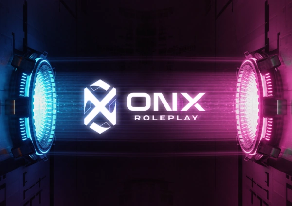

ONX RP ES
Información destacada de ONX RP
- Discord oficial: https://discord.gg/DW3jTj7uT3
- Tienda oficial: https://community-store.onx.gg/category/boost-de-formulario
- Twitter: https://x.com/onxgges
- Formulario de acceso: https://t.co/Y95ffoQwMO
Datos del servidor
Es un servidor dedicado al roleplay más serio, se busca antes el rol que el PVP. Sus Owners son Diablo y PapoChristian, estos abrieron el servidor el 26 de septiembre, entre las 17 y 18 CET.